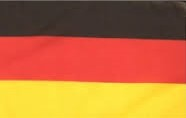
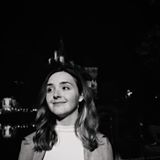

Önéletrajzom
Önéletrajz
Cél:
A Budapesti Műszaki és Gazdaságtudományi Egyetem Gépész Karán Ipari termék-
és formatervező szakán szeretném felsőfokú tanulmányaimat elvégezni, a területen elhelyezkedni.
Iskolák:
- 2006-2014. Vak Bottyán János Általános Iskola és Alapfokú Művészetoktatási Intézmény informatika tagozat, Siófok
- 2014-2019. Vetési Albert Gimnázium biológia tagozat, Veszprém
- 2019.- Budapesti Műszaki és Gazdaságtudományi Egyetem Gépész Kar, Ipari termék- és formatervező szak
Érdeklődés:
- matematika és művészetek
- 2005-2013. Siófoki Művészeti Iskola tagja,
- 2013. Zenetörténeti alapvizsga
- 2015. Közúti elsősegély nyújtó vizsga
- 2016 nyara: Dinasztia cukrászda dolgozója
- 2017 nyara: Jobb agyféltekés rajztanfolyam elvégzése
- 2018 és 2019 nyara: Király ABC dolgozója
Tanulmányi versenyek:
- 2011. Zrínyi Ilona Matematikaverseny iskolai fordulója, második helyezés
- 2017. BME által meghirdetett Energetika verseny 7. helyezés
Nyelvismeret:
- 2017. angol B típusú középfokú nyelvvizsga(TELC)
- 2018. német B típusú középfokú nyelvvizsga(TELC)
Szabadidős tevékenység:
zenehallgatás, portré rajzolás, sportolás, zongorázás
Személyes rész:
- 1999. május 19-én Pécsen születtem
- Szüleim: Balassa Károly közlekedési mérnök és Balassáné Dombi Judit középiskolai tanár
- Bátyám: Balassa Balázs Bence
Vissza